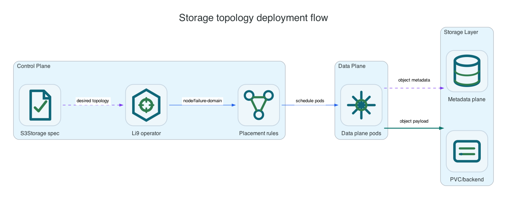

Reference / Runtime
Storage topology and runtime shape.
Storage topology decides whether Li9 S3 owns the storage plane, runs only S3 services over an existing backend, or exposes a storage plane for another S3 plane. The concepts are shared across platforms even though the configuration syntax changes.
Runtime Modes

| Mode | Meaning | Use When |
|---|---|---|
S3OverPVC | S3 services run over a shared PVC or filesystem backend. | You want the simplest Kubernetes deployment and underlying storage already provides durability. |
FullDistributed | Li9 S3 deploys gateway/control services and Li9-owned storage nodes. | You want product-managed data protection across nodes/failure domains. |
StoragePlaneOnly | Only the Li9 storage plane is deployed. | You are separating storage nodes from an S3/control plane. |
S3PlaneOnly | Gateway/control services connect to an existing storage plane. | You want an S3 API plane over an already deployed Li9 storage plane. |
Data, Metadata, And Archive Placement
| Area | Placement Options | Notes |
|---|---|---|
| Data | Per-node PVC, shared PVC/filesystem, or external storage plane. | Use PerNodePVC with RWO for node-local storage nodes; use SharedPVC with RWX for S3-over-PVC. |
| Metadata | Dedicated PVC, colocated with data, or host path in native installs. | Raft/KV/WAL is always the metadata architecture; only placement changes. |
| Archive | Same data plane, dedicated archive PVC/backend, or configured archive tier. | Policies decide which buckets or objects move to archive tiers. |
Platform Mapping
| Mode | Where To Configure |
|---|---|
| OpenShift Operator | S3Storage.spec.deployment and S3Storage.spec.storage. |
| Helm | Chart values under deployment/runtime/storage sections. |
| Linux | Host config file with node list, data paths, metadata paths, and protection settings. |
| Windows | Host config file with node list, Windows paths, and protection settings. |
Verification
oc -n li9-s3-runtime get s3storage li9-s3 -o jsonpath='{.spec.deployment.mode}{"
"}'
oc -n li9-s3-runtime get s3storage li9-s3 -o jsonpath='{.status.effectiveConfiguration}' | python3 -m json.tool
oc -n li9-s3-runtime get statefulset,deploy,pvc -l app.kubernetes.io/part-of=li9-s3-storage